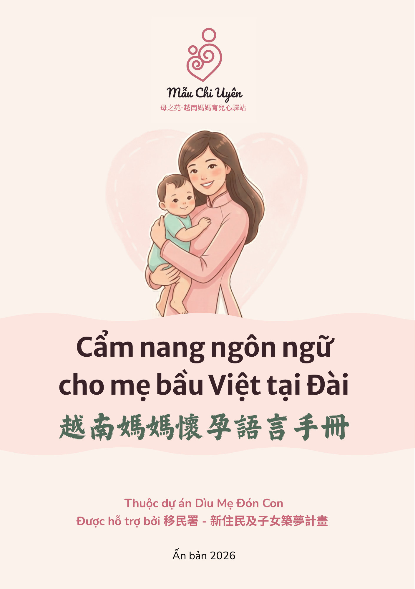
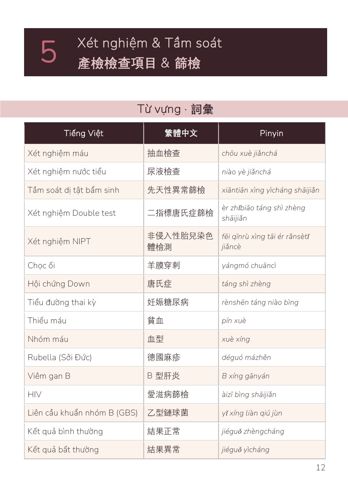
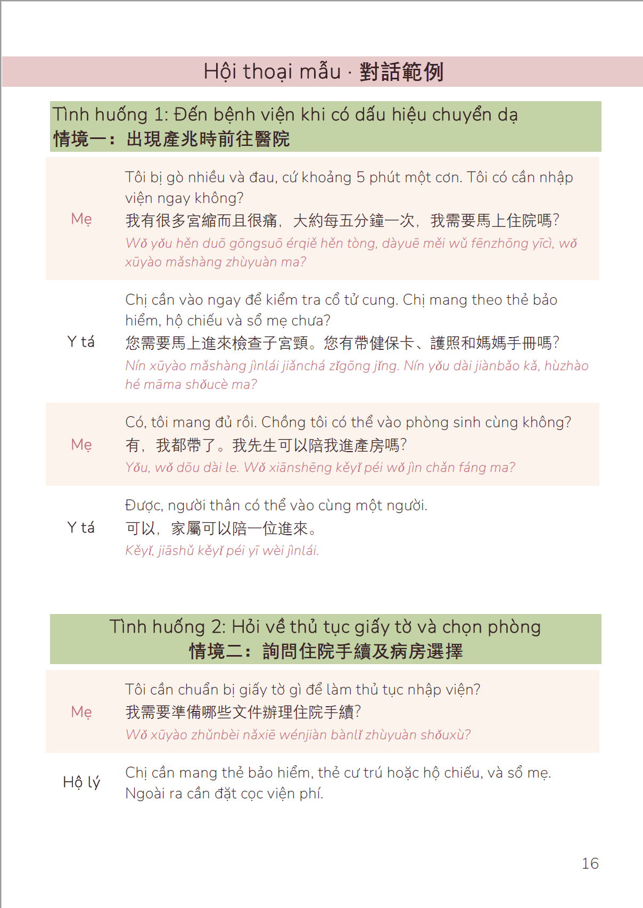

Một cuốn sổ tay song ngữ Việt–Trung (có phiên âm), đồng hành cùng mẹ từ khi xác nhận mang thai đến các thủ tục trợ cấp dành cho gia đình di dân mới — để mang theo bên mình, dùng ngay tại phòng khám hay ở nhà.
一本越南語為主、繁體中文為輔（附拼音）的雙語手冊，陪伴媽媽從確認懷孕到新住民補助申請的每一步——可隨身攜帶，在診間或家中隨時查閱。

Nhiều mẹ Việt vẫn thấy khó khăn khi trao đổi với bác sĩ hay đọc hiểu giấy tờ trợ cấp bằng tiếng Trung. Cuốn sổ tay này được thiết kế để bạn chỉ tay vào trang cần thiết ngay tại phòng khám, hoặc tự học ở nhà theo tốc độ của riêng mình.
許多越南媽媽在與醫師溝通或閱讀中文補助文件時仍感到吃力。這本手冊的設計，是讓妳能在診間直接指出需要的頁面，也能在家依照自己的步調自學。
Tiếng Việt là ngôn ngữ chính, tiếng Trung phồn thể đi kèm, có phiên âm để mẹ ở mọi trình độ tiếng Trung đều dùng được.
越南語為主，繁體中文為輔，並附拼音，讓不同中文程度的媽媽都能理解使用。
Từ chương đầu tiên "Xác nhận mang thai" đến chương cuối "Thủ tục trợ cấp cho gia đình di dân mới" — theo đúng trình tự mẹ sẽ trải qua tại Đài Loan.
從第一章「確認懷孕」到最後一章「新住民補助申請」——依照媽媽在台灣會經歷的實際順序編排。
Từ vựng, hội thoại mẫu và mẹo thực tế được trình bày rõ ràng để mẹ có thể chỉ tay và dùng ngay khi cần, không cần giải thích dài dòng.
詞彙、示範對話與實用提醒清楚呈現，讓媽媽能直接指出、立即使用，不需要冗長說明。
Sổ tay khổ A5, đầy đủ trang bìa, lời ngỏ, danh mục từ vựng y tế và tài liệu tham khảo — đi cùng mẹ suốt hành trình, từ que thử thai đầu tiên đến những thủ tục hành chính cuối cùng.
A5 尺寸，包含封面、序言、醫療關鍵詞彙附錄與參考資料——陪伴媽媽從第一次驗孕，到最後的行政手續，走完這段旅程。


Sổ tay hiện có bản in giới hạn (khoảng 80–120 cuốn) và bản điện tử. Điền thông tin bên dưới, chúng mình sẽ liên hệ để gửi sổ tay phù hợp với bạn.
目前有限量印刷版（約 80–120 本）及電子版。請填寫以下資訊，我們會與妳聯繫，寄送適合妳的版本。